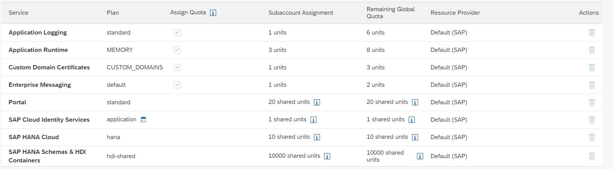
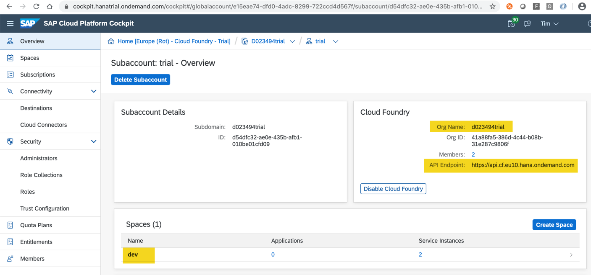

Prepare SAP BTP and Cloud Foundry
Prerequisites
- You have an SAP BTP global account, a subaccount, and a Cloud Foundry space with the required entitlements to deploy the application.
Additional Documentation
Overview
You need an SAP BTP account to deploy the services and applications. In general, you've a choice of the following options:
If you just want to try out things and don’t want to use any of the parts of this tutorial productively, this is probably the best option for you. The usage is free of cost and many of the services that you need are created for you. For example, an SAP HANA instance is already created for you when you set up the trial account. So, there's the least work to do when you want to concentrate on developing the actual application. This comes with some drawbacks, however. Trial accounts have a limited usage time. After a while, you've to refresh the subscription and redo all the work. Also, there are a number of things that you can’t do as opposed to a full account.
There are multiple live landscapes in different data centers around the globe. The live landscapes are intended for live customer usage, but also development projects by customers and partners.
Option 1: Create a Trial Account
You can register for a trial account and access it here.
A global account, a subaccount, a Cloud Foundry org, and space with some entitlements that are sufficient to do this tutorial are set up for you.
If you use an existing trial account then service entitlements may be missing.
New service offerings are not added to existing trial accounts automatically.
In case you face a problem when creating a service instance or an application is missing for subscription later in the tutorial, please do the following:
- Go to your trial subaccount.
- Choose Entitlements.
- Choose Configure Entitlements.
- Choose Add Service Plans.
- Search for the missing Service Plans and add it with Add
Service Plans . - Choose Save.
Continue with Log On to Cloud Foundry at the end of this page.
Option 2: Create Live Account
Required Service Entitlements
If you choose to create an account on Live, you've to select a number of services that you need to subscribe to, for example, an SAP HANA database. For each service, there are so-called entitlements, which are basically the service plans and the number of units that you want from each service, when you create an account you need to provide these also.
The following services with their service plans and entitlements are required for the different modules of the tutorial and will be needed to create the global account and subaccount.
| Service | Plan | Amount | Unit | Tutorial |
|---|---|---|---|---|
| Application Runtime | MEMORY | 4 | GB | MTA Deployment |
| Application Logging | standard | 1 | instances | MTA Deployment |
| SAP HANA Schemas & HDI Containers | hdi-shared | 1 | instances | MTA Deployment |
| SAP HANA Cloud | hana | 1 | instances | SAP HANA Cloud Setup |
* - The services mentioned below are Utility Services, no entitlement needed
| Service | Plan | Amount | Unit | Tutorial |
|---|---|---|---|---|
| Connectivity | lite | 1 * | instances | MTA Deployment |
| Destination | lite | 1 * | instances | MTA Deployment |
| Authorization & Trust Management | application | 1 * | instances | MTA Deployment |
* - The following mentioned applications are available as Subscriptions, no entitlement needed
| Application | Plan | Amount | Unit | Tutorial |
|---|---|---|---|---|
| SAP Business Application Studio | standard | 1 | ? | numerous |
At least the services for the tutorials SAP HANA Cloud Setup and MTA Deployment need to be entitled.
Create a Global Account
As the result of these steps there will be a Cloud Foundry space with required entitlement to deploy the service. This requires the creation of an SAP BTP global account, subaccount, space, and the assignment of the required entitlements.
-
Go to the Control Center:
-
Choose the ( + ) button in the upper right corner.
Enter Account Info:
- Enter a global account name.
- Enter a description.
- (Optional) If you've a Service Inventory ID (see https://jtrack.wdf.sap.corp/browse/SERVICE), then choose the radio button Yes under the section "Service Provider Account" and enter it.
- Choose Next.
Enter Business Info:
- Enter the cost center number.
- Read & check the disclaimer.
- Choose Next.
Assign Services:
- Select the services from the table Set Entitlements above.
- Choose Next.
Set Entitlements:
- Set the entitlements from the Service Entitlements table for the desired tutorial modules.
- Choose the Add button for each of them.
- Choose Create Account.
Create Subaccount
-
Go to the Control Center:
-
Select your global account in the dropdown menu.
-
Choose Open in Cockpit.

-
Choose Subaccounts in the left navigation pane.
-
Choose the New Subaccount button.
Fill New Subaccount dialog:
-
Enter a Display Name (suggestion: use short name for your project and add the prefix for the landscape, for example:
<project name>-cf-eu10).Don’t select the checkbox Neo!
-
Enter a subdomain (only valid HTTP domain characters are allowed).
- Choose Create.
- Wait for the completion of the subaccount creation.
- Choose the tile with your new subaccount.
Configure Cloud Foundry in Your Subaccount
This creates a Cloud Foundry (CF) Org in your subaccount. There’s always one Cloud Foundry org per subaccount. Later on, when you log on to Cloud Foundry, it asks you which Cloud Foundry org you want to log on to. For any development in you subaccount, you need to choose this org for your subaccount.
- Choose Enable Cloud Foundry.
- Enter a Cloud Foundry Org Name and choose OK (suggestion: use
SAP_as prefix, for example:SAP_<project name>). - (Optional) In the left navigation pane under the section Cloud Foundry, choose Org Members and add users for your new account. Your own user should already be there. You can add other users if needed and assign a role to them.
- On the left-hand pane under Security, choose Administrators and add the required security administrators. Again, your user should be prefilled. You can add other users if needed.
Assign Entitlements
In this section, you assign a portion of the entitlements that you’ve bought for your global account to the individual subaccounts. In this, you've only one subaccount. If you've 3 subaccounts, for example, and have bought 100 units of the HTML5 service, you could assign 50 units to the first subaccount, 20 to the second, and the remaining 30 to the third subaccount.
- In your subaccount, choose Entitlements in the left-hand pane.
- Choose Configure Entitlements.
- Choose Add Service Plans.
- Go through the Entitlements according to the Service Entitlements table and add the required plans for each of them.
- Choose the + or - symbol to change the quota for the services according to the Service Entitlements table.
- Choose Save.
Example:

Create a Cloud Foundry Space
Next to Cloud Foundry orgs there are also Spaces. Each Cloud Foundry org can have 0 to n spaces, you create just one here.
- Open the subaccount page in the SAP BTP cockpit.
- Choose Spaces in the left pane under the section Cloud Foundry.
- Choose Create Space.
- Enter a space name (suggestion: If different subprojects exist in the org:
<sub project name>-<stage name>, otherwise:<stage name>; where stage name is the release stage, for example:dev,val,prod) - Choose Create.
User Assignment in the Cloud Foundry Space
- Open the space page in the SAP BTP cockpit (you can just choose the tile for the space that was created).
- Choose Members in the left navigation pane.
- (Optional) Choose Add Members to add all required users, again your own user should already be part of the list.
- (Optional) Add a DL of your CFDeployment technical user as Space Manager if you've one.
Log on to Cloud Foundry from the Command Line
Prepare for the next steps by logging on to Cloud Foundry and targetting your space in the account.
If you don't know whether you’re logged on to Cloud Foundry or if you're wondering to which Cloud Foundry org and space are you logged on, you can always use cf target in a terminal to find out. If you aren't logged on already, go to your SAP BTP Cockpit by using one of the following links, depending on the landscape you want to deploy to:
-
Select your Global Account and then the Subaccount to which you want to deploy your service and application.
-
On the subaccount page, gather all the data to log in to Cloud Foundry (CF):
- the
API Endpoint - the
Org Name - the
Space Name

For your convenience, these are the API Endpoints for the different landscapes:
- the
-
Open up a terminal.
-
Set the Cloud Foundry API endpoint:
cf api <API Endpoint of your landscape> -
Log in to your Cloud Foundry account, using your SAP BTP credentials:
cf login
Log on to Cloud Foundry in SAP Business Application Studio
- Choose the icon for Cloud Foundry: Targets on the left navigation bar to select the Cloud Foundry: Targets panel.
-
Choose Create new target Cloud Foundry on the Cloud Foundry: Targets panel.

-
Enter a name for the target, for example
cpapp, in the popup and confirm with Enter. - Choose cpapp → Services → Login Required on the Cloud Foundry: Targets panel.
-
Enter the Cloud Foundry endpoint in the popup and confirm with Enter.
For your convenience, these are the API Endpoints for the different landscapes:
-
Enter your SAP BTP registered E-Mail address and confirm with Enter.
- Enter your password and confirm with Enter.
- Select the Cloud Foundry organization and confirm with Enter.
- Select the Cloud Foundry space and confirm with Enter.